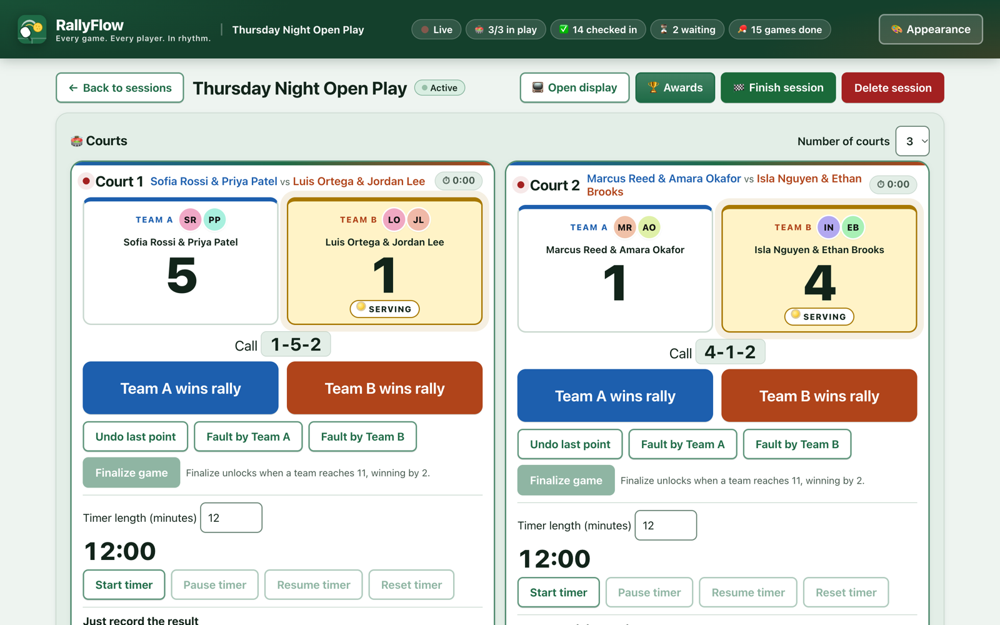
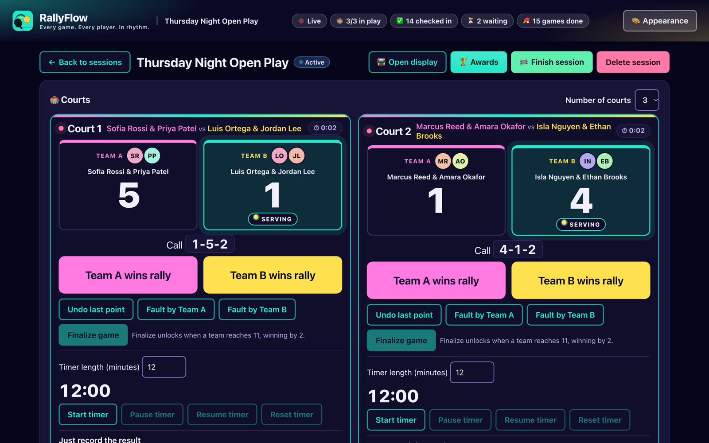
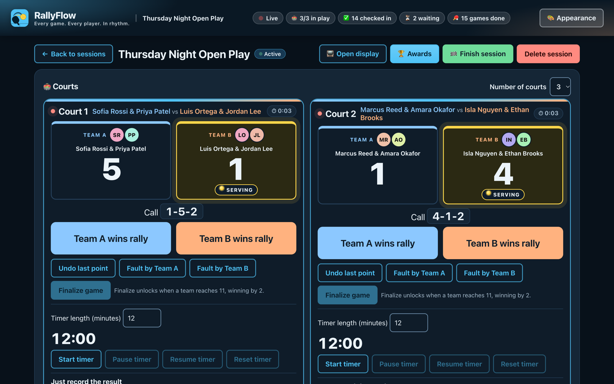
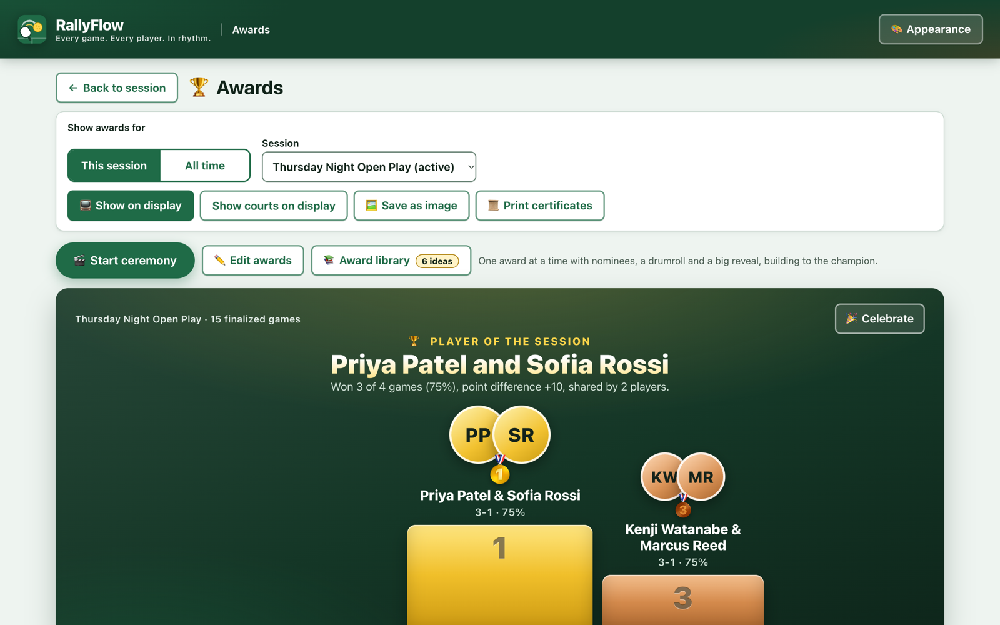
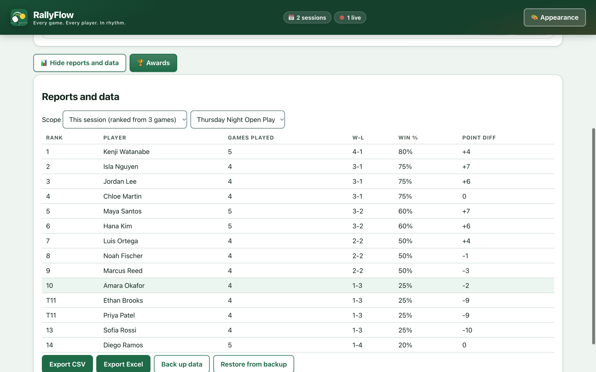
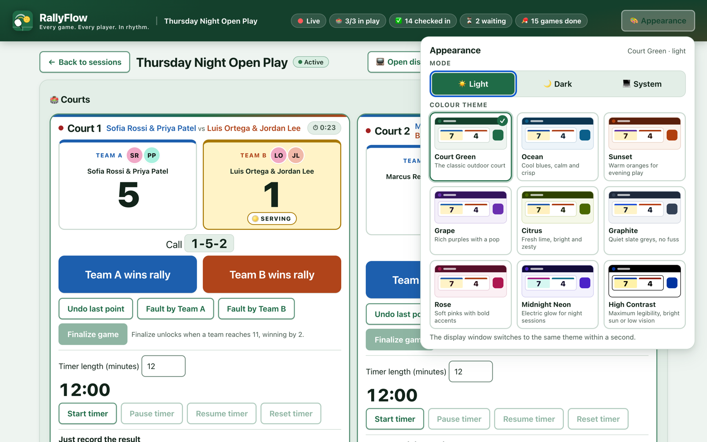

Offline Pickleball Open Play Manager
Every game. Every player. In rhythm.
Run open play from one laptop: fair rotations, rally-by-rally scoring with the official rules, a big-screen display for the players and an awards ceremony at the end. No internet, no accounts, no fuss.
Free download · macOS 13+ and Windows 10/11 · First open? See Mac or Windows tips.

Features
Everything open play needs. Nothing it doesn't.
Built courtside for organizers who juggle 16 to 32 players on 2 to 4 courts — and want everyone to play, fairly, without spreadsheets or whiteboards.
Fair rotation, decided for you
RallyFlow recommends the next game for every free court: whoever has waited longest goes on, partners and opponents get mixed up, and nobody sits out twice in a row.
- Check players in and out as they arrive or rest
- One tap — Start this game — fills a court
- See why each player was picked

Rally-by-rally scoring, official rules
Tap who won the rally. RallyFlow tracks side-outs, the server number and the called score (“4-1-2”) using the official pickleball rules — and undo is always one tap away.
- Big, glove-friendly buttons and keyboard support
- Game timer that never ends a game on its own
- Or just record the final score

A big-screen display for the players
Plug in a TV or projector and open the display: every court, every score and who's up next, readable from the baseline. It updates by itself and has no buttons to bump.

An awards ceremony to end the night
Player of the session, a podium, Hot Streak, Point Machine, Dynamic Duo, Social Butterfly and more — worked out from the night's games. Put it on the big screen, save it as an image or print certificates.

Nine themes, light or dark
Court Green, Ocean, Sunset, Midnight Neon, High Contrast and more. The display follows your pick.
Offline and private
Everything stays on your computer. No accounts, no cloud, no tracking — it works with the Wi-Fi off.
Backup, export, reports
Leaderboards per session and all-time, CSV and Excel export, and one-file backups you can restore anywhere.
How it works
Three steps to a flowing night
Most organizers are running their first session within five minutes of installing.
Start a session
Name tonight's open play and pick 2, 3 or 4 courts.
Check players in
Type names as people arrive. Regulars are remembered, with their stats.
Play
Press Start this game for each free court, score the rallies, open the display — RallyFlow keeps the line moving.
Screenshots
See it in action



FAQ
Questions, answered
Does RallyFlow need the internet?
No. After you download it once, RallyFlow never connects to the internet. It works in a gym with no Wi-Fi, and nothing about your players ever leaves the laptop.
Where is my data, and who can see it?
Only you. Sessions, players and scores live in a database on your computer. There are no accounts, no cloud and no analytics. Backups and exports are ordinary files that you choose where to save. Read the privacy policy.
My Mac says the app is from an “unidentified developer”. How do I open it?
- Open the downloaded .dmg and drag RallyFlow into Applications.
- In Applications, Control-click (or right-click) RallyFlow and choose Open, then Open again.
- If macOS still refuses, open System Settings › Privacy & Security, scroll down and click Open Anyway next to RallyFlow.
You only do this once. The warning appears because the app is not yet notarized by Apple, not because anything is wrong with it. Pick Apple silicon for M1–M4 Macs and Intel for older Macs (Apple menu › About This Mac tells you which).
Windows shows “Windows protected your PC”. Is that OK?
Yes. SmartScreen warns about new apps that are not yet code-signed. Click More info, then Run anyway, and follow the installer. You only see this the first time.
What computers does it run on?
macOS 13 Ventura or later (Apple silicon and Intel) and Windows 10 (22H2) or Windows 11. Any laptop from the last several years is plenty. A second screen or TV is optional, for the display.
How many players and courts?
RallyFlow is designed for 16 to 32 players on 2 to 4 courts, doubles or singles. It is happy with smaller groups too.
How do I move to a new laptop or keep a safety copy?
Use Back up data to save one file, then Restore from backup on the other computer. RallyFlow also keeps automatic safety backups before any restore.
Where do I download it?
Installers for every version are on the RallyFlow GitHub Releases page. Choose the .dmg for Mac or the Setup .exe for Windows.
Bring rhythm to your next open play
Free to download. Runs offline. Set up in minutes.